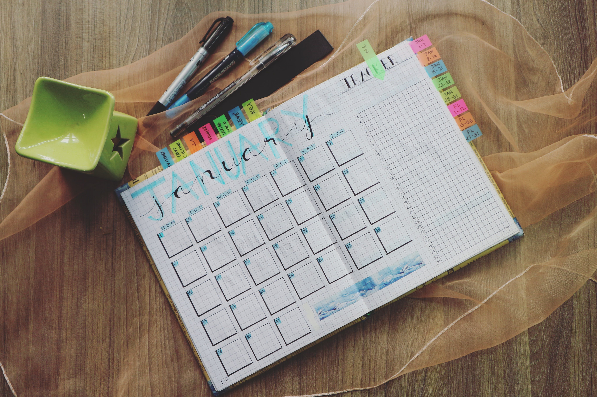

Introduction:
In the fast-paced and often unpredictable world we live in, there's something incredibly comforting about having a routine. Routines provide structure, predictability, and a sense of control in our lives. But did you know that embracing routine isn't just about convenience? It can also be a powerful tool for improving your mental health and managing anxiety. In this blog post, we'll explore the importance of routines and simple ways to incorporate them into your daily life.
The Power of Simple Routines
Simple routines can serve as essential anchors in our lives, helping us maintain good mental health and cope with anxiety. Let's take a look at some straightforward yet effective daily routines that you can adopt:
- Wake up the same time every day: Consistency in waking up sets the tone for the day, ensuring a smooth start.
- Shower as if you were going out: Treating your morning routine with the same care and attention, even if you're staying at home, can boost your self-esteem and motivation.
- Dress for the day: Wearing comfortable yet presentable attire can improve your self-image and productivity.
- Eat meals at regular times: Structured meal times help regulate your body's internal clock and stabilize your mood.
- Keep to a daily schedule of exercise: Regular physical activity has numerous mental health benefits, including reducing anxiety and boosting mood.
- Limit your use of electronic devices or TV time: Excessive screen time can disrupt your sleep patterns and contribute to feelings of restlessness.
- Go to bed at the same time each night: A consistent bedtime routine can improve the quality of your sleep and overall mental well-being.
Why Routines Are Important
Now that we've discussed some simple routines, let's delve into why they matter for your mental health:
- They create structure: Routines provide a framework for your day, starting from the moment you wake up. This structure helps you navigate your tasks with a clear plan in mind.
- They give us a sense of accomplishment: Routines often consist of tasks with a clear beginning and end. Completing these tasks gives you a sense of achievement, boosting your confidence and motivation.
- They let us know how we are doing: Small routines like personal hygiene and dressing may seem insignificant, but they play a crucial role in self-assessment. Neglecting these routines can make you feel sluggish or lazy, affecting your self-perception.
- They let people around us know how we are doing: Routines serve as indicators to those around us. Changes in our routines can signal shifts in our mental well-being. Before the pandemic, not showing up for work or isolating for extended periods would raise concerns among friends and colleagues. The absence of routine can create uncertainty and anxiety in our social circles.
Conclusion
Embracing routine is not about rigidly controlling every aspect of your life; it's about finding balance, structure, and stability. Simple daily routines can be powerful tools for maintaining good mental health and managing anxiety. They offer structure, foster a sense of accomplishment, help us self-assess, and communicate our well-being to those around us.
In a world that often feels chaotic and overwhelming, routines provide a sense of control and predictability. So, take the first step today, start small, and gradually build routines into your life. You'll be amazed at the positive impact they can have on your mental health and overall well-being.